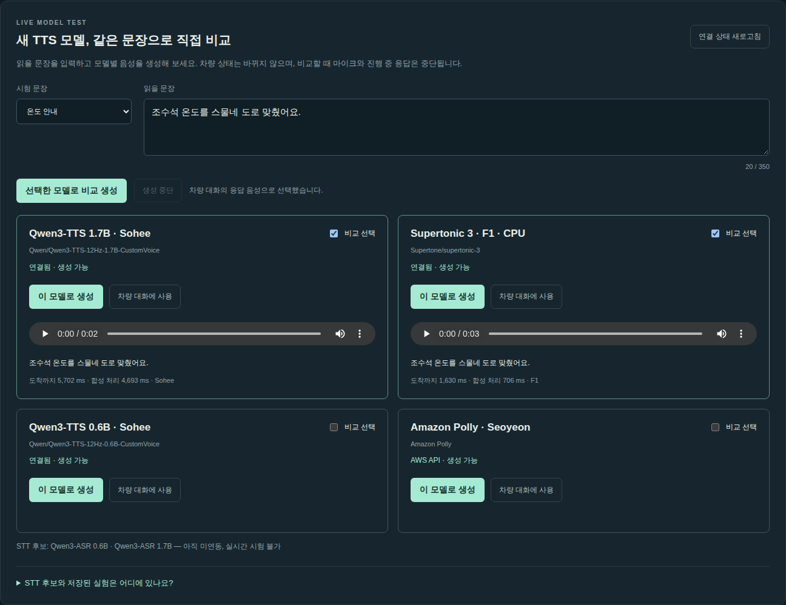

운영 업데이트: 두 GPU 종료를 2026-10-23 06:08 / 06:10 KST(부팅 후 16시간)로 연장했습니다. STT 4종 비교 실습을 추가했습니다. 아래 과거 실행 시각보다 이 예약이 최신입니다.
이 실습에서는 Whisper → Qwen3.5-4B NF4 → 차량 실행기 → 선택한 TTS 경로를 실행합니다. 응답 음성은 Polly, 기존 Qwen 0.6B, Qwen 1.7B, Supertonic 3를 비교합니다. 실제 자동차가 아니라 사용자별 서버 메모리의 가상 차량을 조작합니다.
2026-10-22T10:58:17.336818+00:00.2026-10-22T21:08:30+00:00, GPU 2 2026-10-22T21:10:17+00:00. 재부팅하면 일정이 바뀝니다.기계 판독용 검증 요약. 이 검증은 모든 후보 모델·고난도 48문제·실차 성능을 통과했다는 뜻이 아닙니다. 이번 배포는 로컬 정보 제공자를 사용하며 AgentCore Gateway는 선택 확장으로 남겼습니다.
음성 재인식 점수·잡음 억제 실험과 앱 기능 검증은 별개입니다. 기존 31개 음성 점수나 새 48문제 명세를 배포 검증 통과로 대신 사용하지 않습니다.
운영자가 먼저 자신의 AWS 계정에 환경을 배포하고, 참가자는 공유 HTTPS URL로 접속하는 방식을 권장합니다. 참가자마다 GPU 두 대를 만들 필요는 없습니다.
운영자 준비 사항:
default입니다.ap-northeast-2의 VPC·서브넷, 인터넷 연결.g6e.2xlarge 두 대 기준 16 vCPU.aws sts get-caller-identity
aws configure list-profiles
aws service-quotas get-service-quota \
--service-code ec2 --quota-code L-DB2E81BA \
--region ap-northeast-2 --query 'Quota.Value'
계정·프로파일이 의도한 대상인지 확인합니다. 자격 증명, SSH 개인키, .runtime 내용 전체는 공유하거나 커밋하지 않습니다.
저장소 루트에서 실행합니다.
npm ci
npm test
cp .env.example .env
.env에서 AWS_PROFILE, AWS_REGION을 자신의 값으로 설정합니다. Python 배포 스크립트는 .env를 자동으로 읽지 않으므로 셸로 가져옵니다.
set -a
. ./.env
set +a
export AWS_REGION=ap-northeast-2
npm test는 차량 원자성·취소·세션·TTS 라우팅 등을 검사합니다. 실제 GPU나 Polly 호출 없이 통과해야 합니다.
자신의 VPC와 서브넷을 확인합니다.
aws ec2 describe-vpcs --region ap-northeast-2 \
--query 'Vpcs[].{Id:VpcId,Default:IsDefault}'
aws ec2 describe-subnets --region ap-northeast-2 \
--query 'Subnets[].{Id:SubnetId,Vpc:VpcId,AZ:AvailabilityZone,Public:MapPublicIpOnLaunch}'
aws ec2 describe-instance-type-offerings --region ap-northeast-2 \
--location-type availability-zone \
--filters Name=instance-type,Values=g6e.2xlarge
사용 가능한 AZ에 있는 서브넷을 선택합니다. 아래 YOUR_...를 실제 값으로 바꾸세요. 이번 배포에서는 Ubuntu 24.04 PyTorch 2.12 DLAMI ami-050f756cf5f8aef77을 사용했으며, 나중에 재현할 때는 해당 AMI의 가용성을 확인해야 합니다.
export AWS_VPC_ID=vpc-YOUR_VPC
export AWS_SUBNET_ID=subnet-YOUR_SUBNET
export AWS_AMI_ID=ami-050f756cf5f8aef77
umask 077
mkdir -p .runtime
ssh-keygen -t ed25519 -f .runtime/vehicle-key -N '' -C vehicle-voice-lab
python3 infra/provision.py
python3 infra/provision_speech.py
python3 scripts/gpu.py status
기존 .runtime/vehicle-key나 배포 상태가 있으면 새 키로 덮어쓰지 말고 해당 배포를 이어서 사용합니다. 같은 로컬 상태 파일을 사용하는 프로비저닝 명령은 기존 인스턴스를 재사용합니다.
기대 결과: 두 인스턴스가 running, 유형은 g6e.2xlarge, 리전은 ap-northeast-2. 생성 직후에는 pending일 수 있습니다. 부팅과 cloud-init 완료 후 다음 단계로 진행합니다.
구성: 서버당 NVIDIA L40S 1개, GPU 메모리 48GB, 8 vCPU, 시스템 RAM 64GiB. 4시간 자동 중지 타이머가 생성됩니다. 자동 중지는 모델 설치·검증 시간도 포함하며, 인스턴스를 다시 시작하면 부팅 시점부터 다시 계산합니다.
python3 scripts/bootstrap-workers.py --worker core \
--with-minicpm --with-tts-candidates
python3 scripts/bootstrap-workers.py --worker speech
첫 실행은 Python·CUDA 라이브러리·모델 가중치를 다운로드하므로 웹 코드 배포보다 오래 걸립니다. SSH 연결을 유지하고 로그를 확인하세요. 명령이 종료됐다는 것과 모델이 GPU에 모두 로딩됐다는 것은 다릅니다.
| 위치 | 서비스 | 내부 포트 |
|---|---|---|
| GPU 1 | vehicle-core |
9101 |
| GPU 1 | vehicle-tts — Qwen 0.6B |
9102 |
| GPU 1 | vehicle-minicpm — 선택 설치 |
9103 |
| GPU 1 | vehicle-whisper |
9105 |
| GPU 1 | vehicle-tts-qwen17 |
9106 |
| GPU 1 CPU | vehicle-tts-supertonic |
9107 |
| GPU 2 | vehicle-speech — 모델 하나씩 교체 |
9104 |
모델 포트는 loopback에만 바인딩합니다. 인터넷에 열지 않습니다. CPU Supertonic도 GPU 1 호스트의 CPU/RAM을 쓰지만 GPU 모델은 아닙니다.
python3 scripts/gpu.py logs
python3 scripts/gpu.py tunnel
터널을 실행한 터미널은 그대로 두고, 다른 터미널에서:
curl --fail http://127.0.0.1:19101/health
curl --fail http://127.0.0.1:19105/health
curl --fail http://127.0.0.1:19106/health
curl --fail http://127.0.0.1:19107/health
npm start
브라우저에서 http://127.0.0.1:8787에 접속합니다. 기대 결과는 ready: true와 선택한 모델 ID·리비전입니다. Qwen 1.7B와 Supertonic은 각각 다음 값이어야 합니다.
Qwen/Qwen3-TTS-12Hz-1.7B-CustomVoice / 0c0e3051f131929182e2c023b9537f8b1c68adfeSupertone/supertonic-3 / 3cadd1ee6394adea1bd021217a0e650ede09a323python3 infra/deploy_cloudfront.py
처음에는 VPC origin 상태가 Deploying일 수 있습니다. AWS에서 생성이 완료된 뒤 같은 명령을 다시 실행합니다. 새 리소스를 직접 중복 생성하지 않습니다.
배포 URL이 출력되면:
python3 scripts/deploy-web.py
이 명령은 Node 앱, 허용된 정적 파일과 가이드, 합성 시험 음성만 업로드합니다. 개인키·개발자 AWS 자격 증명·.env·.runtime 전체는 업로드하지 않습니다. 웹 호스트의 AWS 호출은 인스턴스 역할을 사용합니다.
CloudFront가 Deployed가 된 뒤 출력된 HTTPS URL을 사용합니다. 모델 연결은 GPU 1 내부 loopback과 GPU 2의 사설 프록시를 사용합니다. 참가자는 SSH 터널이나 AWS 키 없이 브라우저로 접속합니다.
후속 웹 업데이트도 scripts/deploy-web.py를 사용합니다. 캐시가 남으면 자신의 배포 ID에 대해 무효화합니다.
aws cloudfront create-invalidation \
--distribution-id YOUR_DISTRIBUTION_ID --paths '/*'
워커 코드 업데이트는 별도입니다.
python3 scripts/gpu.py deploy --worker core
모델·패키지 변경 시에는 해당 워커 설치·로딩 검증도 다시 수행합니다. 웹 배포만으로 GPU의 Python 환경이 갱신되지는 않습니다.
export TEST_BASE=https://YOUR_DISTRIBUTION.cloudfront.net
node scripts/cloud-deployment-smoke.mjs
node scripts/cloud-tts-smoke.mjs
검사 범위:
기대 결과는 스크립트 종료 코드 0과 passed: true입니다. TTS 검증 상세는 .runtime/cloud-tts-validation.json에 저장됩니다. 단지 HTTP 200이거나 목소리가 들린다는 것만으로 통과시키지 않습니다.
Sonic을 사용하는 실습이라면 도쿄 Bedrock 모델 접근을 확인한 뒤 별도로 실행합니다. 한국어는 공식 지원으로 간주하지 않습니다.
node scripts/sonic-smoke.mjs
모델 교체·SSE 장시간 유지까지 확인하려면:
TEST_LONG_SSE=1 node scripts/cloud-deployment-smoke.mjs
이 검사는 Qwen3-Omni를 로드하며 첫 실행이 오래 걸릴 수 있습니다. 특정 모델만 미리 받으려면 GPU 2의 /opt/vehicle-speech에서 HF_HOME=/opt/vehicle-speech/models omni-env/bin/python cache_speech.py --model step-audio2-mini처럼 실행할 수 있습니다. 기본 배포 검증에서는 MiniCPM과 Step-Audio를 scripts/cloud-audio-paths-smoke.mjs로 확인했습니다. 모든 모델을 다 검증한 것으로 해석하지 않습니다.
대화 패널에 바로 보이는 응답 음성 선택에서 모델을 바꾸고 다음을 반복합니다. 판단 모델과 STT는 모델·음성 설정에 있습니다. 초기에는 텍스트로, 이후 마이크로 시험하면 인식 문제와 판단 문제를 분리하기 쉽습니다.
| 순서 | 요청/조작 | 기대 결과 |
|---|---|---|
| 1 | 초기화 후 “조수석 온도를 25도로 맞춰줘.” | 운전석 22도 유지, 조수석 25도 |
| 2 | “아니, 24도로.” | 조수석만 24도 |
| 3 | “조수석 온도를 40도로.” | 24도 유지, 허용 범위 안내 |
| 4 | “지금 조수석 온도가 몇 도야?” | 24도라고 답하고 상태 유지 |
| 5 | 응답 도중 취소 | 뒤늦은 응답 음성이 이어서 재생되지 않음 |
| 6 | 다른 시크릿 창에서 접속 | 새 차량 상태는 양쪽 22도 |
| 7 | Qwen 1.7B / Supertonic을 각각 선택 | 선택한 모델명과 실제 응답 기록 일치 |
■ 중단은 진행 중 요청·응답 음성을 중단하며, 이미 반영된 차량 상태를 되돌리지는 않습니다. 상태 복원은 별도로 “방금 설정 되돌려줘”를 사용합니다.
/api/tts에서 워커 준비 상태를 확인할 수 있습니다. 로딩 중인 자체 TTS는 선택이 비활성화됩니다. 존재하지 않는 TTS 이름을 API로 보내면 400을 반환하며 Polly로 몰래 바꾸지 않습니다.
마이크 실습은 HTTPS에서 권한을 허용해야 합니다. 실제 사람·실제 마이크의 음질과 브라우저 자동 재생 정책은 참가자가 확인해야 하며 서버 자동 시험으로 대체할 수 없습니다.
이 기능은 TTS만 호출하므로 차량 명령을 실행하지 않습니다. 합성 음성이 마이크에 다시 들어가는 것을 막기 위해 마이크와 진행 중 대화 응답을 중단합니다. Qwen3-ASR 두 모델은 별도 STT 비교 화면에서 시험할 수 있고, CosyVoice·Kokoro의 저장된 실험은 별도 링크로 제공합니다.

이번 벤치마크에서 31개 음성과 고난도 48개 음성을 전환합니다. 14개 설정의 진행 수, 앱 결과, 모델 원안 동작, 지연과 실패 상세를 확인할 수 있습니다. 이 모델로 대화는 실제 대화 설정을 선택합니다. 이전 환경의 점수는 아래의 접힌 이전 평가 기록에 보존합니다.
운영자 실행 순서:
# 기존 GPU 터널을 실행해 Qwen 0.6B의 두 번째 합성 목소리를 사용할 수 있게 합니다.
python3 scripts/gpu.py tunnel
# 다른 터미널에서 실행
AWS_PROFILE=default node scripts/generate-vehicle-benchmark.mjs
AWS_PROFILE=default node scripts/generate-hard-benchmark-audio.mjs
python3 scripts/start-deployment-benchmarks.py
기존 입력 파형은 저장소에 없으므로 동일한 31개 문장·합성 설정으로 다시 생성했습니다. 모든 모델에는 그 공통 파형을 사용하며 SHA-256을 기록합니다. 고난도 48개도 공통 합성 음성을 사용합니다. 총 본문 입력은 1,106개(31×14 + 48×14)이며 선행 요청·환경 재시도는 별도입니다.
평가용 Node API는 같은 EC2의 loopback 8788에서 별도 실행됩니다. 웹 배포로 평가가 중단되지 않도록 소스를 고정했고, 공개 UI에는 읽기 전용 결과만 제공합니다. 고난도 fixture 주입은 고정된 case ID와 비공개 운영자 키가 필요하며 공개 앱에서는 비활성화됩니다. 키·환경 파일은 공유하지 않습니다.
이번 전체 평가 동안 자동 중지는 부팅 후 16시간, 현재 부팅 기준 2026-10-23 06:08~06:10 KST로 연장했습니다. 새 환경의 기본 타이머는 여전히 4시간이며, 타이머를 바꾸면 private state의 autoStopHours와 가이드도 함께 갱신해야 합니다.
추가 음성 모델 실습은 이번 서버에서 사전 로딩·검증한 Step-Audio 2 mini를 기본 선택으로 사용합니다. 다른 모델로 바꾸면 큰 가중치 다운로드와 교체 시간이 필요할 수 있습니다.
현재 48문제에는 가드·모델이 실패할 수 있는 사례도 포함합니다. “모두 통과해야만 배포 가능”이라는 기존 기능 회귀 기준과 동일하게 취급하지 말고 개선 연구용으로 별도 기록합니다.
| 증상 | 먼저 확인 |
|---|---|
| 웹이 열리지 않음 | 인스턴스가 자동 중지됐는지, CloudFront 상태, vehicle-web 서비스 |
| 403 | 올바른 HTTPS 배포 URL인지, origin 검증 설정·Host 일치 여부. 비밀값을 브라우저에 넣어 해결하지 않음 |
| GPU 준비 중 | 해당 /health, 워커 journal, 모델 다운로드·CUDA 메모리 |
| TTS 선택 불가 | /api/tts의 해당 모델 ready, 서비스와 내부 포트 |
| 화면은 바뀌는데 음성이 실패 | TTS 단계 오류. 이미 반영된 차량 상태를 자동으로 되돌리는 동작은 아님 |
| 모델 교체가 느림 | 로딩과 추론을 분리해 기록. 사용자별 상태가 달라도 GPU 모델은 공유 |
| 마이크만 실패 | HTTPS·권한·입력 장치·브라우저 처리 설정 |
| 숫자/좌석이 틀림 | 원문 전사와 모델 제안 동작을 각각 확인. 가드가 막은 것을 모델 정답으로 세지 않음 |
서버에 SSH로 접속한 상태에서 필요한 서비스만 조회할 수 있습니다.
sudo journalctl -u vehicle-web -n 80 --no-pager
sudo journalctl -u vehicle-tts-qwen17 -n 80 --no-pager
sudo journalctl -u vehicle-tts-supertonic -n 80 --no-pager
nvidia-smi
python3 scripts/gpu.py stop
python3 scripts/gpu.py status
두 인스턴스의 stopped를 확인합니다. 웹 서버도 GPU 1과 함께 중지되므로 공유 URL은 더 이상 정상 응답하지 않습니다. 중지해도 EBS·일부 네트워크/배포 리소스 비용은 남을 수 있습니다.
다음 실습에서 재사용하려면:
python3 scripts/gpu.py start
python3 scripts/gpu.py status
공인 IP가 바뀔 수 있으므로 상태를 갱신합니다. CloudFront VPC origin의 EC2 식별자는 유지되지만, 가동·서비스·사설 연결을 다시 검증합니다.
완전히 삭제할 때는 이 프로젝트의 .runtime에 기록된 리소스만 대상으로 CloudFront 비활성화·삭제 → VPC origin 삭제 → EC2 종료와 연결 스토리지 확인 → 전용 IAM 역할/프로파일·보안 그룹·키 쌍을 정리합니다. 다른 프로젝트의 기본 VPC·서브넷·인터넷 게이트웨이는 삭제하지 않습니다. 키와 상태 파일은 정리가 끝날 때까지 보관합니다.
TTS 비교 화면에서 Ppaso-TTS · 한국어 · ONNX CPU를 선택합니다. 숫자·좌석·부정 표현을 각각 생성해 들어보세요. 모델과 실측 결과를 참고하세요.